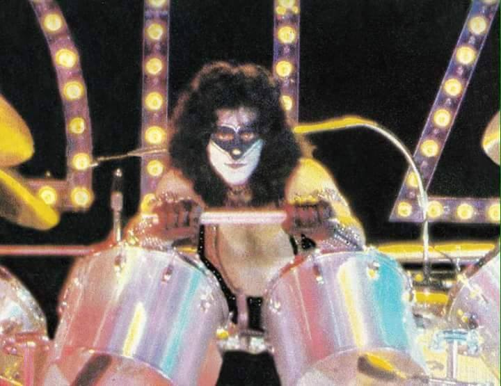

O inicio da raposa
Por: Morgo
.Paul Charles Caravello (12 de julho de 1950 – 24 de novembro de 1991), mais conhecido como Eric Carr , foi um músico americano. Ele foi o baterista da banda de rock Kiss de 1980 até sua morte em 1991. Caravello foi escolhido como o novo baterista do Kiss após a saída de Peter Criss . Ele criou o nome artístico "Eric Carr" e desenvolveu sua persona de raposa para o palco, se tornando o membro do kiss mais amado e querido pelo publico devido a seu carisma, humildade e amor aos fãs, sempre dando o máximo de si para o publico.
Caravello se candidatou ao Kiss, enviando uma fita cassete do single atual do Kiss, " Shandi ", mas com seus vocais sobre a música em vez dos vocais de Paul Stanley . "Soou ótimo!", ele exclamou anos depois. A inscrição foi colocada em uma pasta laranja brilhante para se destacar visualmente. Jayne Grodd, uma funcionária do Kiss, disse a ele mais tarde que havia notado o envelope colorido e, portanto, o escolheu para ser analisado.
A primeira apresentação publica de Carr com o Kiss foi no Palladium em Nova York, em 25 de julho de 1980. Em 30 de julho, Carr foi apresentado ao público em um episódio do programa de televisão juvenil Kids Are People Too!, que foi ao ar em setembro de 1980. Esta foi a primeira vez que ele usou a maquiagem com a qual a maioria dos fãs o identifica, criando a persona de 'The Fox'.